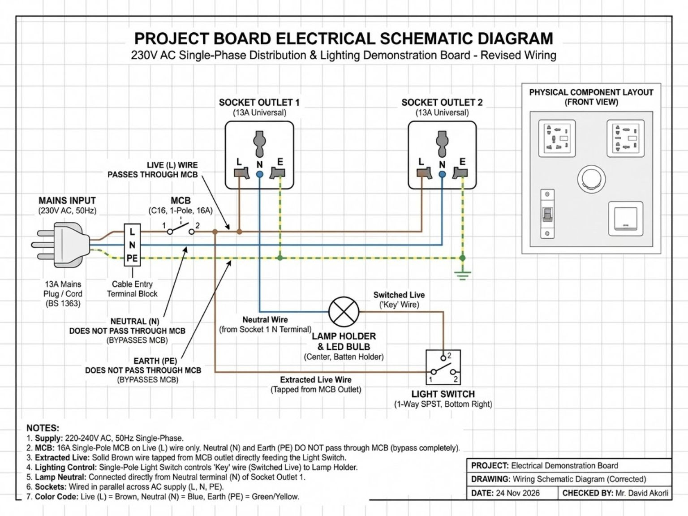

Front view of the completed demonstration board.
01 · Project overview
This project involved the joint design and construction of a single-phase electrical installation demonstration board by two Level 200 students of the BSc Electrical and Electronic Engineering programme at the University of Mines and Technology (UMaT). The board demonstrates common domestic wiring components and the arrangement of socket-outlet and lighting circuits.
The project was assigned by Mr. David Akorli. The board was assembled on a plywood mounting panel, with components secured using screws and conductors routed behind the board and supported with cable clips.
02 · Project photographs
Rear view

Rear view of the mounting board. This photograph documents the board structure; it does not establish conductor terminations.
03 · Reported technical specifications
| Main supply cable | 2.5 mm² (reported) |
|---|---|
| Socket circuit conductors | 2.5 mm² (reported) |
| Lighting conductors | 1.5 mm² (reported) |
| Protective-earth conductor | 2.5 mm² (reported) |
| Lamp label | 106 lm/W efficacy; 20,000-hour rated life; 6-star energy label |
Specifications are recorded as reported by the project designers. They are not an engineering approval or confirmation of compliance.
04 · Components and materials
- 1 × C32 Type C, 32 A MCB (reported)
- 2 × double 13 A socket outlets
- 1 × single-pole lighting switch
- 1 × lamp holder with plastic-and-metal construction; protection class not verified
- 1 × Night Angel 10 W LED lamp
- Plywood mounting board, cable clips and screws
- Live, neutral and protective-earth conductors
05 · Construction and working principle
A plywood board was used as the mounting base. The MCB, socket outlets, lighting switch and lamp holder were positioned and secured. Cables were routed behind the board and held with cable clips.
The two double socket outlets were reported to be connected in parallel using a loop-in/loop-out arrangement. The one-way switch controls the lighting point. The designers reported that L is the incoming live terminal and L1 is the switched-live output to the lamp. The lamp neutral was tapped from one of the socket outlets.
The designers reported a 2.5 mm² protective-earth conductor connected to both socket outlets and metallic back boxes. No earth was connected to the lamp holder. Because the holder has plastic and metal parts, its protection class and earthing requirements remain unverified.
06 · Schematic drawing status
The submitted draft schematic is being reconciled with the photographs and the reported wiring. The draft drawing labels the MCB C16, while the physical board photograph and the project report identify a C32 device. The complete switch-feed route and lamp-holder earthing requirements also need verification.
07 · Testing status
The designers reported that both socket outlets supplied power and that the lighting circuit operated and the lamp illuminated. No numerical test readings or formal inspection certificate were provided. Functional operation alone does not establish electrical safety.
08 · Safety considerations and outstanding verification
- Verify protective-conductor continuity, insulation resistance and polarity.
- Verify earth-fault loop impedance and automatic disconnection requirements.
- Check suitability of the 32 A MCB for the cable types, sizes, installation method and circuit arrangement.
- Confirm lamp-holder protection class and whether exposed metal parts require earthing.
- Identify and trace all conductors, including red and dark-coloured wires visible behind the board.
- Assess suitable RCD protection under applicable local requirements.
09 · Conclusion and acknowledgement
The project demonstrates a basic single-phase installation incorporating socket outlets, a lighting point, switching and an MCB on a plywood board. It was jointly conceptualised and constructed by David Adjei and Raymond Fameyeh. The designers acknowledge Mr. David Akorli and the University of Mines and Technology (UMaT) for the academic environment in which the project was undertaken.
10 · Full project report
Read the full report online or download the PDF copy.